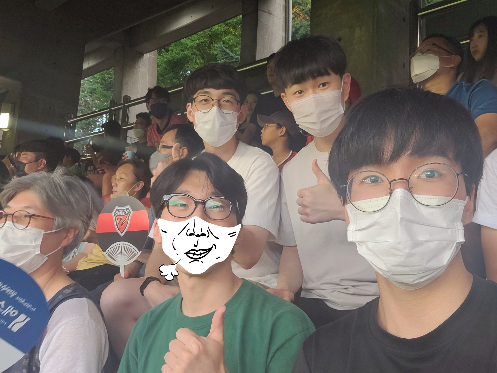
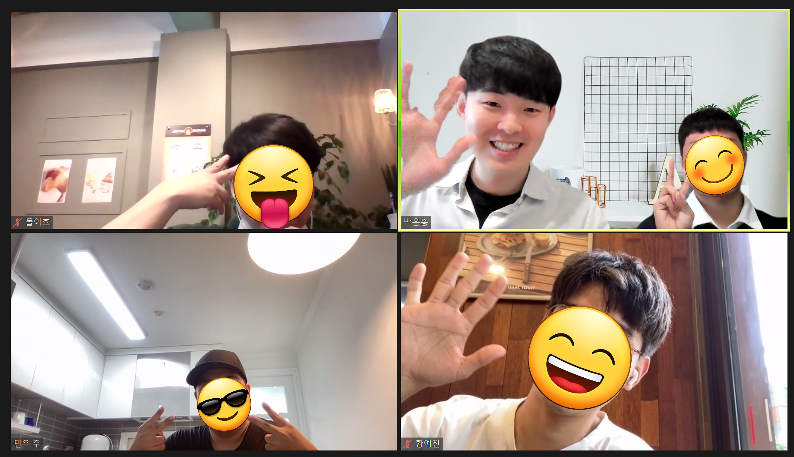
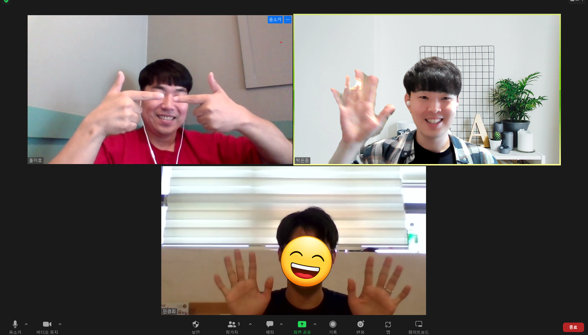
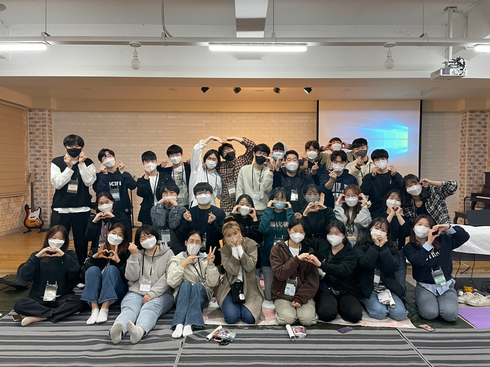

저는 포항 비전선교단 공동체에서 생활하며, 한동대 청년들을 주로 섬기며 지내고 있습니다. 방학을 맞아 많은 학생들이 고향으로 돌아가 저 또한 잠깐의 여유를 가지기도 하며, 줌(원격 회의 서비스)을 통해 섬기는 친구들과 몸은 멀어져도 얼굴을 보며 말씀묵상을 진행하기도 합니다.

<형제간사들과 축구 경기장에서>
학생들은 만나기도 하고 저를 돌아보며 더 느끼는 것은, 하나님앞에 시간을 쏟는 것은 여유가 있고 없고의 문제가 아니라 마음의 문제라는 것입니다. 방학이 되어 시간은 여유가 생겼지만 그럼에도 다른 우선순위들이 있기에 하나님앞에 시간 쓰기 어려워함을 봅니다. 현실적으로 중요하고 필요한 가치들이 있기에, 그것들에 우리의 마음과 시간이 향하게 되는 것은 자연스러운 것 같습니다. 우리 삶에 필요한 현실적인 가치들이 있는 건 분명하지만, 가장 중요한 예수님이 어떻게 하면 우리 삶의 가장 우선순위가 될 수 있을까 고민하며 묵상했던 말씀이 있습니다.

<제자양육 같은 페어와 함께 1>
빌립보서 3:7-8
7 그러나 무엇이든지 내게 유익하던 것을 내가 그리스도를 위하여 다 해로 여길뿐더러
8 또한 모든 것을 해로 여김은 내 주 그리스도 예수를 아는 지식이 가장 고상하기 때문이라 내가 그를 위하여 모든 것을 잃어버리고 배설물로 여김은 그리스도를 얻고
바울의 고백을 묵상하면, 예수님은 다른 가치들과 비교할 수 없는 분임을 말합니다. 바울은 예수님이 내 삶의 1순위라고 말하는 것이 아니라, 다른 2, 3순위의 가치들과는 비교할 수 없는 대상임을 이야기합니다. 다른 가치들과 비교하려 하면 그것들이 배설물과 같이 여겨질 정도라는 것입니다. 우리에게 필요한 가치들이 있지만 바울에게 그것들은 예수님과 비교할 수 없습니다. 예수님이 삶의 전부이기에, 다른 것을 의식적으로 해로 여길 정도입니다. 굳이 다른 것들을 해로 여긴다고까지 말을 하는 것을 보면, 다른 유익하던 가치들이 중요하게 여겨져 예수님과 비교하게 될까 걱정하는 것 같기도 합니다.
무의식적으로 우리 삶을 구성하는 다른 가치들과 예수님을 동일선상에서 비교하게 되는 것 같습니다. 어쩌면 다른 중요한 것들이 예수님보다 앞선다고 느껴질 때, 우선순위가 조금 흐트러진 정도의 문제가 아니라, 우리의 기준 전체가 무너진 건 아닌지 생각해보게 됩니다. 내 시간과 마음을 주님 앞에 드리는 것을 주저하게 만들었던 가치들이 있다면, 마음의 기준을 되돌아보며 주님만이 내 전부되심을 잊지 않는 저와 모두가 되기를 원합니다. 그러한 마음의 기준으로 무엇보다 예수님을 더욱 알게 되고 닮아가기를 소망합니다.

<제자양육 같은 페어와 함께 2>
1. 예수님을 가장 사랑하는 자가 되기를 원합니다. 예수님이 내 전부되심을 잊지 않고, 주님을 얻기를 가장 소망하는 자가 되도록 기도해주세요
2. 섬기는 친구들이 있는데, 그 친구들을 기도와 사랑으로 섬기는 제가 되길 기도해주세요
3. 우크라이나 난민이 900만 명에 육박하고 있습니다(UNHCR 7월 통계). 열방에 수많은 난민들과 민족들이 소망 없이 고통 가운데 살아가고 있는데, 그들이 모든 눈물과 고통을 닦아주실 주님을 만날 수 있도록 기도해주세요
4. 8월 3일-6일에 비전선교단 여름캠프를 준비하고 있습니다. 기도로 준비한 캠프가운데 많은 이들이 나아오고, 참여한 모든 이들이 하나님의 크심을 경험하여 세상을 이기는 믿음이 부어지도록 기도해주세요

<동아리원들 2차 리트릿 후>
* KWMC에서 제가 속한 비전선교단에 한인세계선교대회를 위한 홈페이지 제작을 요청해서 만들고 있었는데, 해당 대회가 마무리되었습니다(kwmc2022.org). 개발자 하며 배웠던 개발지식을 사용하게 되어 신기하고 감사한 시간이였습니다.
* 오래 준비한 선교캠프가 방학 때(8.3-8.6) 열립니다. 혹시 하나님 앞에 집중하고 은혜받는 시간이 필요하신분은 함께해요ㅎㅎ 또는 주변에 이런 은혜의 자리가 필요하신 분들이 있다면 추천해주시면 감사하겠습니다 :)
*혹시 기도제목이 있으시다면 언제든지 편하게 나눠주세요. 작게나마 함께 기도하기 원합니다. (연락처 010-9674-7290)
{kind=link}